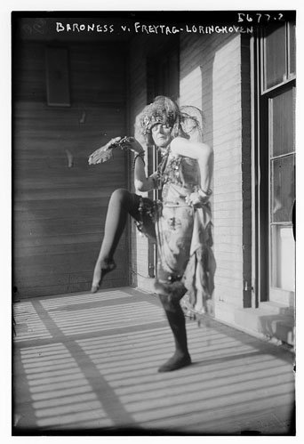

In Transition: Selected Poems
by the Baroness Elsa von Freytag-Loringhoven

Photograph courtesy of the Library of Congress
- "Ancestry"
- "Café du Dôme"
- "Christ - Don Quixote - St. George."
- "Cosmic Arithmetic"
- "A Dozen Cocktails Please"
- "Matter Level Perspective"
- "Orchard Farming"
- "Orgasmic Toast"
- "Ostentatious"
- "Purgatory Lilt/ Statements by Circumstanced Me"
- "Sermon On: Life's Beggar Truth"
- "Xray"
Edited by Tanya Clement, PhD
Browse all manuscript images